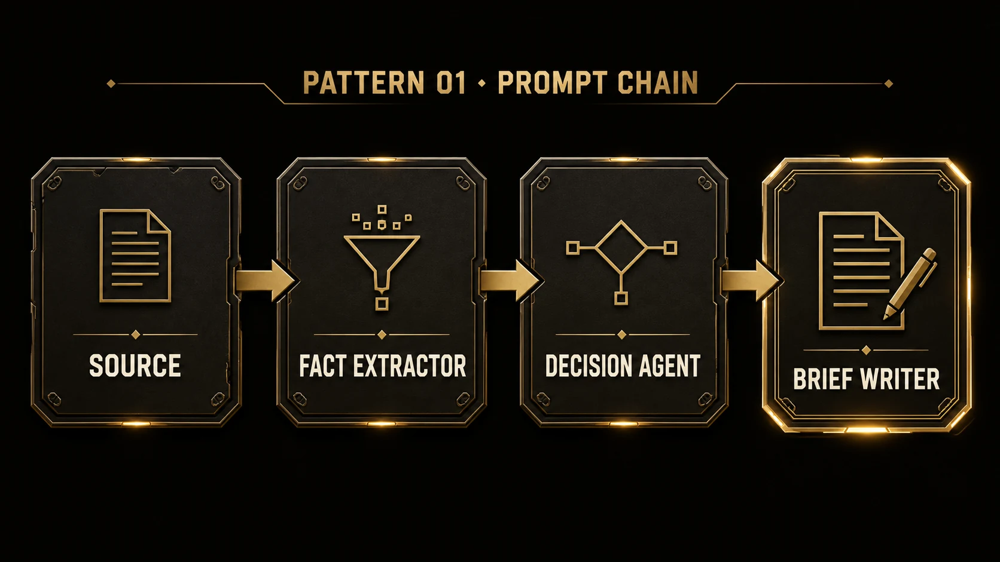
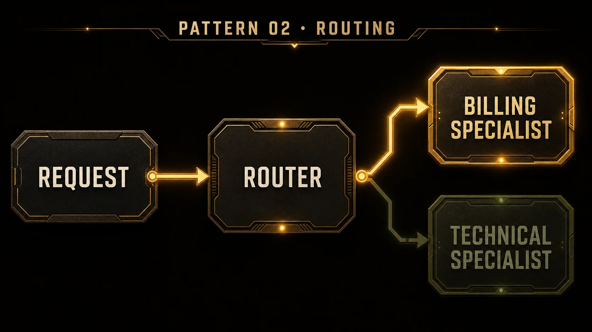
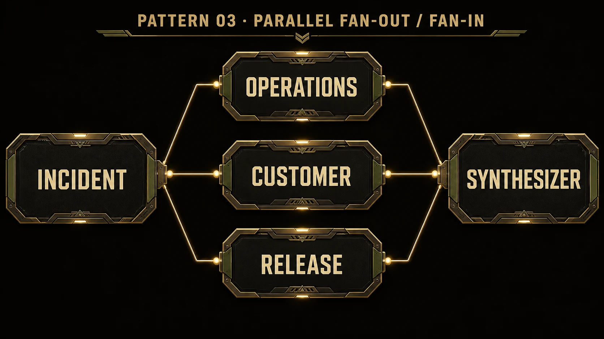
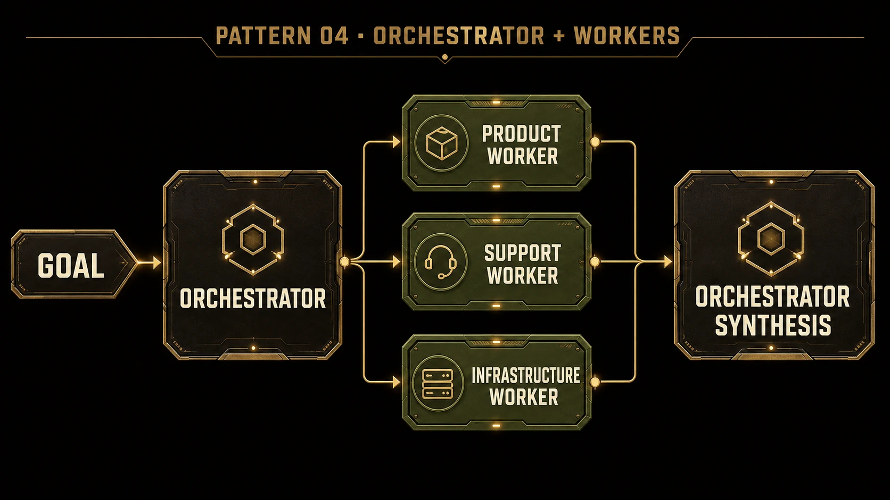
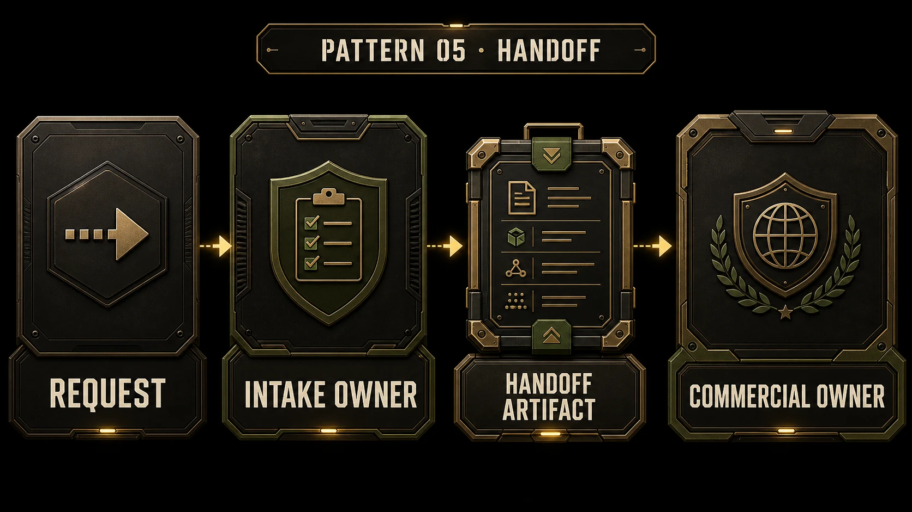
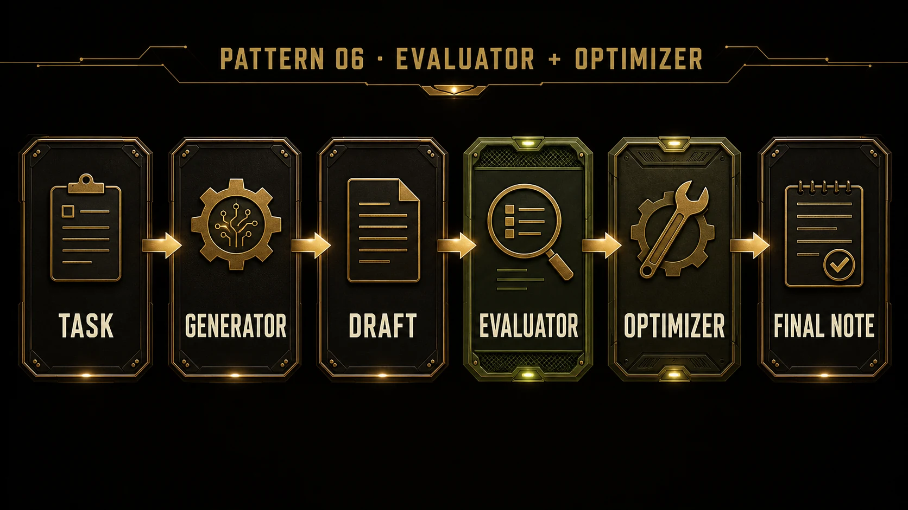
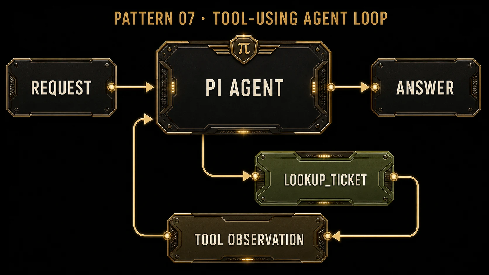
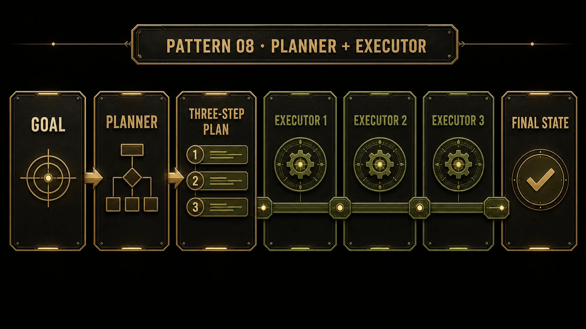
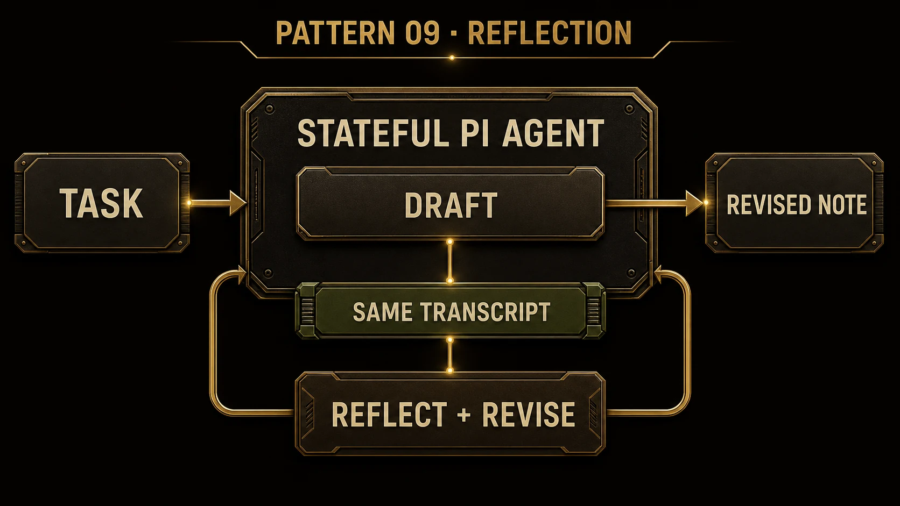
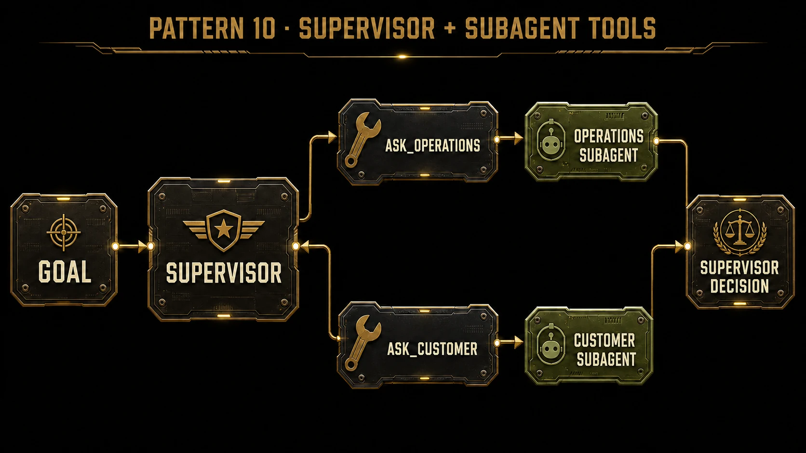

Run ten patterns
Copy each complete block into the same PowerShell window. Read the source that prints first, then follow the control-flow trace and result.
Setup · Prepare the Pi lab
Copy this block into PowerShell :
Set-Location "$env:USERPROFILE\Documents\HarnessBootcamp\AI_Harness_Bootcamp\mission_flesh\pi"
powershell -ExecutionPolicy Bypass -File .\scripts\Setup-PiLab.ps1
What you should see. The offline tests pass and the final line begins PI LAB READY patterns=10.
Pattern 01 · Prompt chain
Three agents pass one result forward: facts → decision → brief.

Read the flow: the extractor turns the source into facts; those facts feed the decision agent, whose result feeds the brief writer. Open full size .
Copy and run:
Get-Content .\src\patterns\01-prompt-chain.ts
powershell -ExecutionPolicy Bypass -File .\scripts\Run-Pattern.ps1 -Pattern 01
What you should see. A three-step trace, a compact brief, and PI PATTERN 01 PASS.
Pattern 01 is complete when the result reaches the brief writer through both earlier outputs.
Pattern 02 · Routing
A router classifies one request and sends it to one specialist.

Read the flow: the router selects billing for this request, and the technical path does not run. Open full size .
Copy and run:
Get-Content .\src\patterns\02-routing.ts
powershell -ExecutionPolicy Bypass -File .\scripts\Run-Pattern.ps1 -Pattern 02
What you should see. The trace names the selected route and ends with PI PATTERN 02 PASS.
Pattern 02 is complete when the billing request reaches only the billing specialist.
Pattern 03 · Parallel fan-out and fan-in
Three analysts run together before one synthesizer merges their returns.

Read the flow: all three analysts receive the incident together; the synthesizer runs after every return arrives. Open full size .
Copy and run:
Get-Content .\src\patterns\03-parallel.ts
powershell -ExecutionPolicy Bypass -File .\scripts\Run-Pattern.ps1 -Pattern 03
What you should see. One fan-out, one fan-in, and PI PATTERN 03 PASS.
Pattern 03 is complete when operations, customer, and release findings converge in one direction.
Pattern 04 · Orchestrator and workers
An orchestrator assigns three slices, then reconciles the worker returns.

Read the flow: the orchestrator defines the slices; scoped workers return findings; the orchestrator owns the final decision. Open full size .
Copy and run:
Get-Content .\src\patterns\04-orchestrator-workers.ts
powershell -ExecutionPolicy Bypass -File .\scripts\Run-Pattern.ps1 -Pattern 04
What you should see. Plan → scoped workers → synthesis, followed by PI PATTERN 04 PASS.
Pattern 04 is complete when the orchestrator turns distinct worker returns into one launch decision.
Pattern 05 · Handoff
One agent produces a bounded transfer artifact; a second agent takes ownership from it.

Read the flow: ownership crosses at the handoff artifact; the receiving agent acts from that bounded transfer. Open full size .
Copy and run:
Get-Content .\src\patterns\05-handoff.ts
powershell -ExecutionPolicy Bypass -File .\scripts\Run-Pattern.ps1 -Pattern 05
What you should see. Intake → handoff artifact → commercial owner, then PI PATTERN 05 PASS.
Pattern 05 is complete when the receiving agent acts from the transfer instead of the original request.
Pattern 06 · Evaluator and optimizer
An evaluator tests a draft; an optimizer uses that verdict to return the final version.

Read the flow: the evaluator checks one draft, then the optimizer applies that verdict in one pass. Open full size .
Copy and run:
Get-Content .\src\patterns\06-evaluator-optimizer.ts
powershell -ExecutionPolicy Bypass -File .\scripts\Run-Pattern.ps1 -Pattern 06
What you should see. Draft → evaluation → optimizer → final result, followed by PI PATTERN 06 PASS.
Pattern 06 is complete when the returned note satisfies the evaluator's named fields.
Pattern 07 · Tool-using agent loop
A Pi agent calls a typed ticket tool, observes the result, and answers from that observation.

Read the flow: the same agent calls the tool, receives its observation, and answers inside one run. Open full size .
Copy and run:
Get-Content .\src\patterns\07-tool-loop.ts
powershell -ExecutionPolicy Bypass -File .\scripts\Run-Pattern.ps1 -Pattern 07
What you should see. The trace counts at least one lookup_ticket call and ends with PI PATTERN 07 PASS.
Pattern 07 is complete when the final answer follows a real Pi tool call and observation.
Pattern 08 · Planner and executor
A planner writes three ordered steps; an executor advances shared state through each one.

Read the flow: the planner fixes the order first; the executor advances the same state through three passes. Open full size .
Copy and run:
Get-Content .\src\patterns\08-planner-executor.ts
powershell -ExecutionPolicy Bypass -File .\scripts\Run-Pattern.ps1 -Pattern 08
What you should see. One plan and three executor passes, followed by PI PATTERN 08 PASS.
Pattern 08 is complete when the third execution step returns the final shared state.
Pattern 09 · Reflection
One stateful Pi agent drafts, reads its own transcript, and replaces the draft with a revision.

Read the flow: one transcript holds both turns, so the same agent can inspect its prior answer and return a revised one. Open full size .
Copy and run:
Get-Content .\src\patterns\09-reflection.ts
powershell -ExecutionPolicy Bypass -File .\scripts\Run-Pattern.ps1 -Pattern 09
What you should see. Draft → same-transcript revision, followed by PI PATTERN 09 PASS.
Pattern 09 is complete when the second turn strengthens the first answer inside one conversation.
Pattern 10 · Supervisor with subagents as tools
A supervisor calls two child-agent tools and combines their independent returns.

Read the flow: the supervisor invokes two subagents as tools, then issues one decision after both return. Open full size .
Copy and run the final block:
Get-Content .\src\patterns\10-supervisor-tools.ts
powershell -ExecutionPolicy Bypass -File .\scripts\Run-Pattern.ps1 -Pattern 10
powershell -ExecutionPolicy Bypass -File .\scripts\Verify-PiLab.ps1
What you should see. Both subagent tools return to the supervisor, then the console ends with PI PATTERN 10 PASS and PI LAB VERIFY PASS patterns=10.
Pattern 10 is complete when one supervisor decision follows both child-agent calls and all ten result files verify.